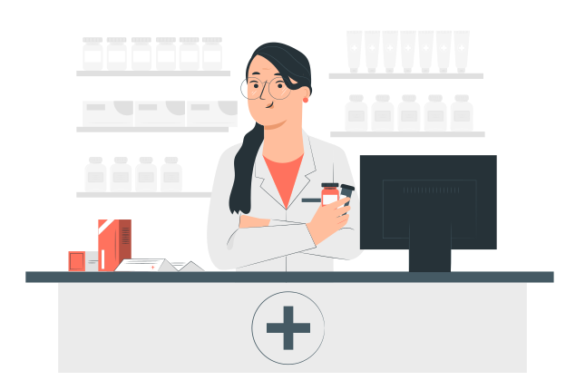

Garanta uma vida longa e cheia de alegria para seu amigo
A Pet Life é o seu refugio de confiança para o cuidado completo do seu pet. Com profissionais dedicados e serviços abragentes, oferecemos uma experiência acolhedora, garantindo o bem-estar, a saúde e a felididade dos seus animais de estimação
Marque uma consulta Conheça nossa ClínicaCuidado Veterinario de Qualidade
Nossa clínica Veterinaria é o local onde a paixão pelos animais se une á excelência em cuidados Veterinarios. Sob a liderança da Dra. Vivian Reid, uma profissional altamente qualificada e comprometida, oferecemos serviços de saúde e bem-estar para animais de estimação de todas as espécies. Venha conhecer nossa clínica e desfrute da atenção e carinho que seu pet merece.
- Consultas de rotina e exames de saúde abragentes
- Vacinação e imunização
- Cirurgias e procedimentos Veterinários
- Tratamento e controle de doenças
- Odontologia Veterinária
- Atendimento de emergência 24 horas
- Nutrição e acolhimento alimentar personalizado
Venha conferir o nosso Petshop Farmácia
Além de ser uma clínica Veterinária de confiança, também contamos com um completo Petshop e farmácia. Nosso petshop oferece uma ampla seleção de produtos de ampla qualidade, desde alimentos balaceados e petiscos deliciosos até brinquedos divertidos e acessórios elegantes para seu pet. Na nosssa farmácia você encontrará uma variedades de medicamentos, produtos de cuidados e suplementos recomendados pelos nossos Veterinários,
Ficou alguma dúvida?
Quais serviços são oferecidos pela clínica da PetLife
A clínica da PetLife oferece uma ampla gama de serviços, incluindo Consultas de rotina, Vacinação, Cirurgias, Tratamento de doenças, cuidados Odontológicos, Atendimento de emergência 24 horas, programas de prevenção de pulgas, carrapatos e vermes, entre outros. Nosso objetivo é fornecer cuidados abrangentes e personalizados para garantir a saúde e o bem-estar do seu pet
Quais espécies de animais a clinica Veterinária atende?
A clínica Veterinária da PetLife atende animais de estimação de todas as espécies, incluindo cães e gatos, pássaros, roedores e répteis. Nossos profissionais possuem conhecimento e experiência para cuidar de diferentes tipos de animais oferecendo um Atendimento especializado e dedicado a cada um deles.
A clínica PetLife possui serviços de emergência?
Sim, a clínica Veterinária da PetLife oferece serviços 24 horas. Se o seu animal de estimação precisar de Atendimento Veterinário imediato fora do horário de expediente, nossa equipe está presente para ajudar.
A Clínica oferece serviços de banho tosa?
Sim, a Clínica Veterinária da PetLife oferece serviços de banho tosa. Nossa equipe de profissionais experientes garante que seu pet receba cuidados adquados, usando produtos de alta qualidade e técnicas seguras. O banho e tosa ajuda a higiene e saúde da pele do seu pet, alem de proporcionar uma experiência relaxante e agradavel para eles.